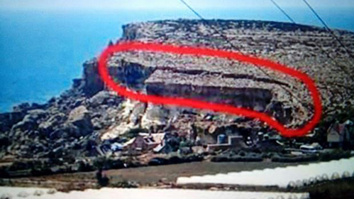
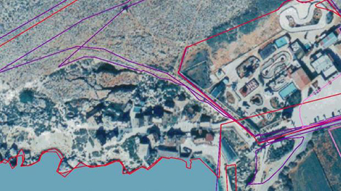
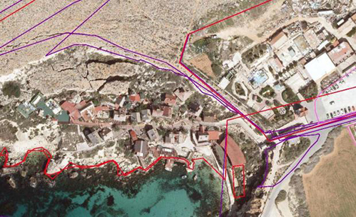

Notícias Nacionais de Malta
sexta-feira, 30 de junho de 2017, 13 : 20
Fissura em Popeye Village não é igual a de Azure Window, dizem os geólogos
A foto do Facebook aumentou o receio de um colapso iminente
Uma fissura em uma formação rochosa que se eleva acima da Anchor Bay na Popeye Village existe há centenas de anos e não ameaça a região pitoresca, disseram os geólogos.
Uma foto com uma fissura circundada em vermelho provocou manifestações de alarde nas mídias sociais, onde as pessoas se perguntavam, se as rochas estavam em risco iminente de colapso.
"Popeye Village é seguro? Nós estamos correndo o risco de um desastre natural?" perguntou um usuário do Facebook que compartilhou a postagem.
A notícia se espalhou rapidamente, com muitas pessoas comparando esta foto com o colapso recente de uma formação rochosa bem mais famosa.
"O que aconteceu com a Azure Window poderia acontecer aqui também", advertiu um leigo.
Os geólogos minimizaram o receio de um colapso
Mas fotos históricas que datam de pelo menos duas décadas mostram que a fissura existia há muito tempo.
"A fratura da superfície (destacada no post de mídia social) já foi traçada em mapas topográficos do início do século XX", disse a Universidade de Modena e o geomorfologista de Reggio Emilia, Mauro Soldati destacou que é provável que esta fratura já exista a centenas de anos atrás, se não milenios.
O Prof. Soldati lidera uma equipe de especialistas que, em colaboração com a Universidade de Malta, realiza um extenso monitoramento de vários lugares em toda a costa noroeste de Malta, com o objetivo de fornecer dados científicos para que as autoridades identifiquem e gerenciem áreas de risco.
Seu trabalho inclui também o monitoramento por GPS da área de Anchor Bay destacada por usuários receiosos de mídia social.
Imagens aéreas
Aqueles que não estão convencidos das garantias do Prof. Soldati, também podem confiar na prova fotográfica de que a fissura não é um fenômeno recente.
Uma foto aérea de 1998 mostra claramente a fissura e comparando-a com uma foto mais recente de 2016, é possível perceber que a fissura na pedra não mudou nas últimas duas décadas.
Ambas as imagens foram obtidas no banco de dados do GeoServer da Autoridade de Planejamento.
A fissura também é claramente visível em várias fotos on-line da Popeye Village, que começou como um filme em 1980 e agora se tornou uma atração turística.
Formações rochosas
A costa noroeste de Malta é caracterizada pelo que os geógrafos denominam "espalhamento lateral", com calcário de coral superior frágil sentado sobre uma argila azul mais suave. Enquanto o primeiro cria um declive acentuado e íngreme, a argila azul leva a encostas mais suaves que geralmente se estendem ao nível do mar.
Em seus comentários, o Prof. Soldati enfatizou as diferenças geomorfológicas entre as rochas da Anchor Bay na formação da Azure Window, que desapareceu no mar em março passado.
Os dois, disse o Prof. Soldati, não eram "comparáveis".
A Azure Window se espalhou para o mar e não tinha um amortecedor natural para suportar impactos diretos, com sua "morfologia rectilínea íngreme" tornando-se mais suscetível ao colapso.
A Anchor Bay, por outro lado, foi moldada pela atividade de deslizamento de terra, em vez do bater nas ondas. Sua superfície foi se unindo e se moldando pela atividade tectônica e a meteorização química, causada pela chuva que reage com minerais em rochas, tendo juntas ampliadas e permitindo que a água da chuva se filtre mais profundamente.
Cientistas da Universidade de Modena e Reggio Emilia que trabalharam com cientistas da Universidade de Exeter, descobriram que a principal inclinação do penhasco acima de Popeye Village foi formada em torno de 21.000 anos BP (Before Present - Antes do Presente), com o movimento ocorrendo quando o nível do mar era estimado em 130 metros abaixo do seu nível atual.